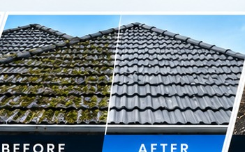

Low-pressure soft wash only
No high-pressure blasting of roof surfaces. We clean gently and let the treatment do the work.
Low-pressure soft washing only, never a high-pressure blast. We remove moss, lichen and algae, check your roof's condition, and send you a photo report of the result.
Every roof is different Free quote Get your free quote Your price depends on roof size, pitch, type and condition.
Moss, lichen and algae do more than look bad. They hold moisture against your roof, can lift and wear surfaces over time, and can block gutters and downpipes. A roof wash removes the growth and treats the surface to slow it coming back.
We clean residential, commercial, industrial and strata roofs across Auckland.
If you can see any of these from the ground, your roof is likely overdue.
It's the most common roof-cleaning mistake, and it's why we only use low-pressure soft washing.
Here's what you get with XTERA that you won't always get elsewhere.
No high-pressure blasting of roof surfaces. We clean gently and let the treatment do the work.
Every job finishes with a photo report emailed to you, so you can see the roof you can't see from the ground.
We photograph any visible damage we find, such as cracked or slipped tiles, so you can get it looked at early.
Treatment that removes growth and helps slow regrowth, not just a rinse of the surface.
Debris washed off the roof is flushed from gutters and downpipes as part of the job.
Plants, tanks, solar panels and surrounding areas are protected before we start.
Eco-friendly treatment that's safe for your garden, pets and rainwater tank.
Not happy with the result within 10 days? Let us know and we'll come back and re-clean the affected areas.
Review your job summary and accept the terms online through a secure link. No paperwork.
Weekend appointments available for busy households and businesses.
Safe work practices on the roof, so the job is done carefully for your property and our team.
Trained technicians who know which products and methods suit which roof.
A simple, transparent process, so you always know what's happening and why.
Tell us about your roof and we'll provide a free, clear quote.
We check the roof type, condition and level of growth, and choose the method.
Plants, tanks, solar panels and downpipes are protected before we begin.
Low-pressure wash with a moss, lichen and algae treatment.
Final rinse and inspection, then your before and after photo report by email.
Different roofs need different care. Tell us what yours is made of and we'll plan the method to suit it.
You rarely see your roof up close. After every wash you get a before and after photo report, plus our 10 day clean guarantee.
Request a quoteGet the whole exterior fresh in one visit. Ask us to include any of these when you request your quote.
Walls and cladding cleaned to match your freshly washed roof.
Learn moreClear leaves and debris from gutters so water flows away from your building.
Learn moreExterior window cleaning for a clear finish across the whole property.
Learn moreSurface cleaning for driveways, footpaths, paving and fences around the property.
Moss and algae return, especially on shaded and damp roof sections. A regular wash keeps the roof fresh and each visit easier.
We service homes and commercial properties right across Auckland, including:
Tell us about your roof and we'll plan the right method and send you a clear, free quote.